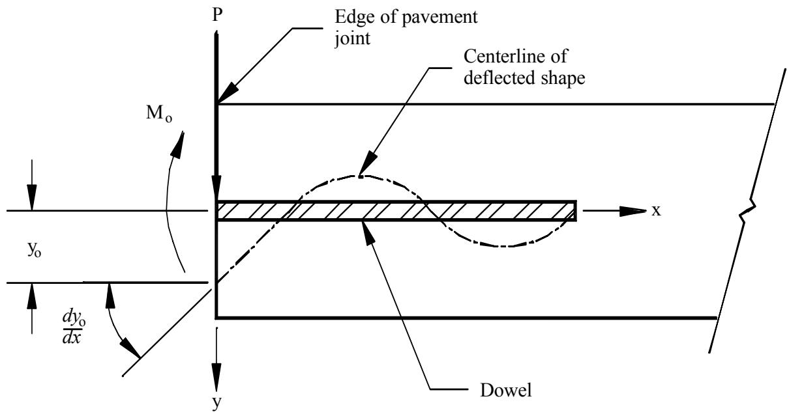
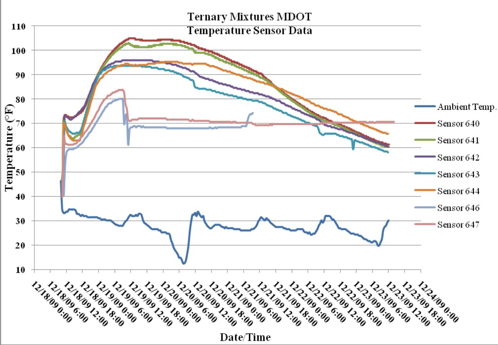
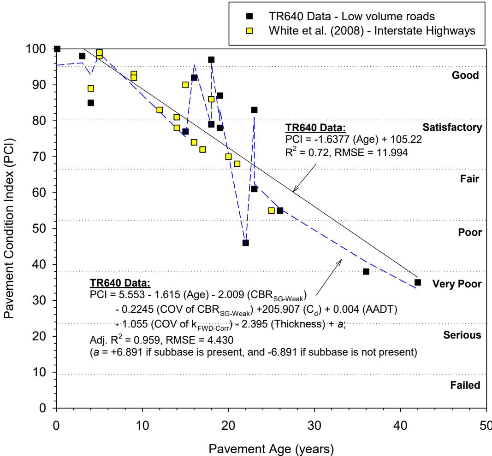
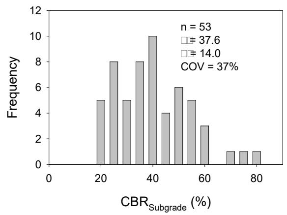
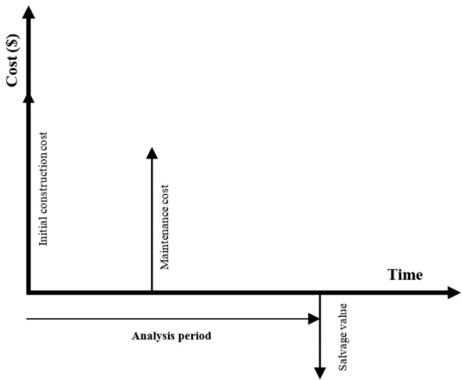
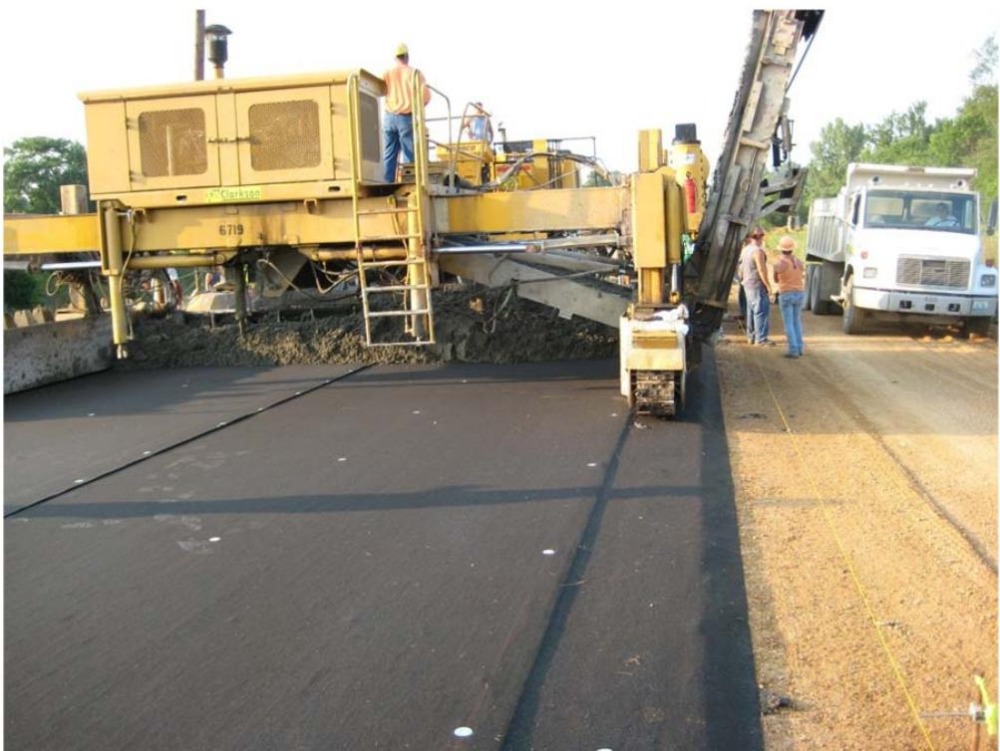
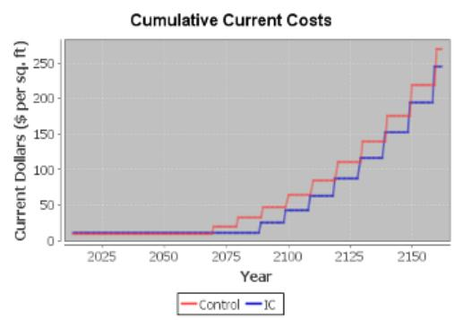
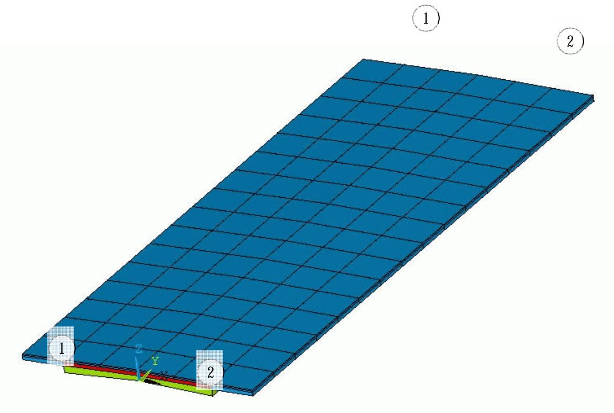

Lifecycle Cost Analysis
Lifecycle cost analysis (LCCA) serves as an economic evaluation method for Concrete Pavement Sustainability by quantifying sustainability through the Net Present Value of all costs associated with a pavement over its design life [6]. This analysis period is selected to be long enough to reflect long-term cost differences and typically includes at least one maintenance or major rehabilitation activity [8]. The calculation encompasses initial construction, maintenance, repair, rehabilitation, and user costs, thereby addressing the economic pillar of sustainability alongside environmental and social considerations [6].
Sources (17)
Methodology and Analysis Components
Analysis Components
- Project definition: Structure type, dimensions, exposure conditions
- Exposure assessment: Environmental conditions, chloride exposure
- Material performance: Durability properties, service life predictions
- Cost estimation: Initial, maintenance, repair, and replacement costs
- Economic evaluation: Present value calculations, discount rates
Timoshenko’s analysis is concluded to be the most appropriate method for analyzing dowels, utilizing a solution to the finite beam problem rather than the conventional semi-infinite idealization. [1]

Slope and deflection of dowel at joint face [1]Semi-adiabatic calorimetry provides an effective means of assessing potential incompatibilities between mixture ingredients, with regular testing flagging changes in composition to reduce the risk of unanticipated behavior at the batch plant. [2]
 Calorimeter test results [2]
Calorimeter test results [2]
Fresh concrete properties including slump, unit weight, temperature, air content, setting time, and microwave water-to-cementitious materials ratio are tested in the field to support performance modeling. [2]

Temperature sensor data from MDOT [2]Multi-variate regression analysis incorporating subgrade stiffness, drainage, and subbase presence improves PCI prediction reliability by a factor of 2.4 compared to age-based models alone. [3]

Relationships between pavement age and PCI with simple linear and multivariate regression analysis results [3]Geostatistical semivariogram analysis is employed to quantify spatial non-uniformity in foundation layer properties, allowing for more accurate modeling of variability in subgrade and base material performance. [4]

TS1: Kriged spatial contour map (top), semivariogram (middle), and histogram (bottom) plots of DCP-CBRSubbase (left) and DCP-CBRSubgrade (right) measurements [4]Composite soil samples combining subbase and subgrade layers are tested for resilient modulus to assess composite behavior, providing a more realistic representation of structural support than individual layer testing. [4]
 σB versus M_r for subbase and subgrade composite sample [4]
σB versus M_r for subbase and subgrade composite sample [4]
In situ resilient modulus values determined from Falling Weight Deflectometer (FWD) measurements often differ significantly from laboratory-derived values, with field data showing averages of 18.9 MPa compared to design assumptions of 20.7 MPa. [4]
Life-cycle cost analysis techniques within design procedures calculate both agency costs, which require simple bookkeeping routines for construction accruals, and user costs that utilize sophisticated models accounting for traffic volumes and maintenance timing impacts. [5]
Design procedures employ life-cycle cost analysis steps that terminate simulations when predicted distress levels exceed user-defined terminating limits, thereby eliminating strategies that fail to meet minimum performance criteria within the specified analysis period. [5]
Advanced LCCA methodologies incorporate specific user cost factors derived from pavement performance metrics such as smoothness, skid resistance, noise generation, traffic shutdowns, and rolling resistance to accurately quantify the economic impact on road users. [6]
User costs are calculated using specialized congestion cost models that account for traffic delays and operational impacts during construction, contributing significantly to total lifecycle expenses. [4]
The economic assessment of internal curing relies on predicted maintenance cost reductions derived from laboratory-measured permeability improvements rather than structural benefits, with rehabilitation intervals extended from 20 years for conventional mixtures to 27 years for internally cured sections. [7]
Key Economic Parameters and LCCA Metrics
Life-cycle cost analyses utilize net present value (NPV) and equivalent annual annuity (EAA) metrics to quantify long-term financial benefits, incorporating variables such as discount rates and time horizons to compare initial construction expenditures against deferred maintenance costs [7]. Key parameters for these analyses include the analysis period (typically 50-150 years), inflation rate, real discount rate, repair intervals and costs, and service life predictions. For instance, an analysis might utilize an analysis period of 150 years, an inflation rate of 1.80%, a discount rate of 2.00%, a repair cost of $37.16/ft², and a repair interval of 10 years. To reflect historical trends over long periods, the US Office of Management and Budget recommends a real discount rate of 0.7% for 30-year cost-effectiveness analysis [8]. Cost components involve initial construction (materials, labor, equipment), maintenance (regular upkeep, preventive measures), repair (structural repairs, patching, rehabilitation), and replacement (full deck replacement when necessary).

Cost stream over the lifecycle of a pavement [8]Life-cycle cost calculations employ both net present value (NPV) to discount future agency costs and equivalent uniform annual cost (EUAC) to generate equivalent series of annual cash flows over the analysis period [9]. These calculations consider the time value of money by discounting future costs to present value. Residual serviceable life represents a significant component of salvage value by accounting for differences in remaining pavement life between alternative design strategies at the end of the analysis period [8]. Conversely, residual value estimation in overlay LCCA often assumes zero salvage value for overlays based on technical advisory committee recommendations, excluding end-of-life material recovery from economic calculations [9]. The International Roughness Index (IRI) serves as a key performance parameter, with failure assumed at 172 inches per mile and major maintenance triggered when values reach thresholds of 130 to 140 inches per mile depending on traffic volume [8]. Additionally, user cost estimation encompasses work zone expenses, detours, vehicle operations, accident risks, and capacity-related delays incurred by roadway users throughout the analysis period [9].
 Lifecycles of two pavements over an analysis period [8]
Lifecycles of two pavements over an analysis period [8]
Material Performance and Durability Factors
Empirical testing establishes that fiber composite (FC) dowel specimens exhibit an average reasonably expected elastic load of 13,849 lbs against a typical required maximum service load of 4,500 lbs [1]. Because no sound theoretical procedure exists for its calculation, the modulus of dowel support is a critical parameter in Friberg’s design equations that must be determined experimentally [1]. Smooth, round, corrosion-resistant dowel bars are typically most effective in maintaining load transfer throughout the life of a pavement [1], and the life of doweled pavement is estimated to last approximately 2.5 times longer than non-doweled pavement prior to any maintenance or rehabilitation [1]. Furthermore, pure-shear load transfer devices are particularly desirable under combined externally applied and thermal loading conditions because they offer no additional restraint to longitudinal curling [1]. Regarding stabilization, methods using high float emulsion or macadam base with choke stone demonstrate superior long-term performance and cost-effectiveness compared to bio-chemical formulas that suffer from freeze-thaw deterioration [3].
Ternary mixtures combining portland cement with supplementary cementitious materials like fly ash and slag can optimize durability and economics by leveraging the synergistic effects of multiple pozzolans [10]. Slag cement is classified into grades 80, 100, and 120 based on compressive strength of mortar cubes in the slag activity index test, where higher grades indicate more rapid strength gain [10], and higher replacement levels of slag cement, often exceeding 60%, are commonly utilized when specific durability requirements such as alkali-silica reaction or sulfate resistance are necessary [10]. To optimize mixture designs for durability, regression models utilizing fly ash calcium oxide content and slag fineness as input parameters can predict key thermal properties, including the area under the hydration curve and maximum temperature [11]. Additionally, the Wenner Probe is a rapid, cost-effective test method used to assess surface resistivity of concrete and has been adopted by multiple state departments of transportation as an acceptance tool [2].
 Temperature data for ternary mixtures with 35% slag cement [2]
Temperature data for ternary mixtures with 35% slag cement [2]
Internally cured concrete improves durability through moisture-loss control and enhanced hydration of supplementary cementitious materials via extended internal moisture supply [12]. This process reduces unit weight, elastic modulus, and coefficient of thermal expansion while increasing strength, leading to tighter crack openings and reduced punch-out failures in continuously reinforced pavements [12]; furthermore, the use of internally cured concrete in continuously reinforced pavements results in reduced upward slab curling, mitigating detrimental effects associated with long-term drying shrinkage [12]. Finally, incorporating structural macro-synthetic fibers into overlay designs enhances fatigue capacity and fracture toughness, allowing for reduced design thickness while controlling differential slab movement caused by thermal curling and warping [13].
Concrete Overlay Design and Construction Strategies
Unbonded thin concrete overlays can extend pavement service life by providing longer-lasting alternatives to asphalt cement concrete overlays while achieving lower lifecycle costs [14]. Unbonded concrete overlays on existing concrete (UBCOCs) demonstrate superior long-term performance compared to bonded alternatives, with field data indicating that 90% of UBCOC projects achieve good-to-excellent condition ratings versus only 72% for bonded concrete overlays on concrete [13]. Similarly, unbonded concrete overlays on asphalt (UBCOAs) exhibit higher durability than bonded counterparts, with field performance data showing that 94% of unbonded projects maintain good-to-excellent condition ratings compared to 88% for bonded overlays [13]. High-quality construction practices can extend the service life of concrete overlays to approximately 45 years before reaching a Performance Condition Index (PCI) of 60, representing a nearly 20-year increase over projects suffering from premature deterioration [13].
 Performance of concrete overlays based on the total database IRI and age [13]
Performance of concrete overlays based on the total database IRI and age [13]
In designs for unbonded overlays over concrete, irregularities in cross-slope and profile should be corrected by varying the thickness of concrete rather than the depth of the asphalt bond breaker to enhance final overlay performance based on construction economics [15]. Designers should compare asphalt or geotextile interlayer (separation layer) costs, construction time, and performance [15]. While PennDOT followed the overlay implementation team’s recommendation to utilize an asphalt separation layer for a short section of unbonded overlay, the use of a geotextile fabric as a separation layer has become more widespread since early 2009 when this recommendation was made [15]. PennDOT should consider its use on future unbonded overlays; geotextiles offer constructability, cost and scheduling advantages over asphalt separation layers [15]. Specifically, geotextile separation layers for unbonded concrete overlays offer lower initial material costs and higher production rates than conventional asphalt separation layers, though their drainage characteristics require specific detailing such as daylighting in open ditch roadways or extension into storm sewer inlets for urban projects [15].

– Geotextile Separation Layer Used in Missouri [15]For thin overlays, it is critical to provide expansion joints in the overlay that match expansion joints in the existing pavement, and these existing expansion joints must be located prior to the placement of the interlayer [15]. Installation of an expansion joints in the overlay can easily be accomplished after the overlay has been placed by making two, full overlay depth saw cuts, located one inch apart, at a contraction joint located near an existing expansion joint, and then replacing the inch of concrete with expansion material [15]. Matching existing features such as median curb, shoulders and drives was complicated by requiring cross-slope correction and strict adherence to the cross-slope depicted on the typical section [15]. Regardless of pavement type, adherence to a constant cross-slope is nearly impossible when constraints are placed on one or both sides of the pavement [15]. Two options exist when designing concrete overlays: first, when existing features are left in place, a minimum and variable cross-slope should be allowed (e.g. cross-slope = variable [1% minimum]); second is the removal of existing features that constrain the elevation at pavement edges, although this method allows full adjustment of the cross-slope, construction costs can be significantly higher when there are multiple storm sewer inlets and driveways to remove and replace [15]. When existing gutters are matched, matching the joints when possible is the preferred option over installation of an expansion/isolation joint, as expansion/isolation joints are prone to higher maintenance costs [15]. Furthermore, inlet design and construction for concrete overlay projects should be considered early in the design stage, as construction staging, equipment and maintenance of traffic may impact the inlet design [15].
Bridge Deck Applications and Case Studies
Surface resistivity testing of bridge decks provides quantitative durability metrics, with internal curing (IC) sections showing higher resistivity values than control sections [16]. Performance modeling for these applications involves chloride diffusion modeling, corrosion initiation prediction, service life estimation, and repair cycle planning, while analysis is influenced by input parameters such as structure geometry (slab thickness, reinforcement depth), exposure conditions (chloride concentration, temperature), concrete mix properties (w/cm ratio, SCMs, diffusion rates), and material costs (conventional vs. enhanced durability mixes). In a specific application studied by Taylor et al. (2016) regarding LWFA bridge deck application, the LWFA concrete deck demonstrated a service life extension of 18.7 years compared to the control section, with lifecycle costs becoming lower after approximately the year 2060 despite higher initial cumulative present value [16]. Specifically, the control section had a 57.9 years service life and $40.00/sq ft lifecycle cost, whereas the IC section provided a 76.6 years service life and $34.80/sq ft lifecycle cost, resulting in a service life benefit of 18.7 years longer for the IC section and a lifecycle cost benefit of $5.20/sq ft lower for the IC section [16].

Lifecycle cost [16]Regarding a separate project, this short section of pavement had a longitudinal crack with some vertical displacement [15]. Because the location was programmed for a major rehabilitation in the future, the Nevada Department of Transportation desired a rehabilitation solution that would provide a 10 to 15 year life [15]. With this in mind, the expert team offered recommendations on two alternatives: first, concrete pavement restoration using full depth patching and other pavement preservation techniques; second, an unbonded concrete overlay [15]. Detailed recommendations were provided for the unbonded overlay approach as well as cautionary advice [15]. Although the field application project is aimed at increasing the use of concrete overlays, the expert teams were never hesitant to recommend alternative solutions that would be more cost effective [15]. The expert team recommended that further coring and falling weight deflectometer testing be performed to determine the support conditions below the pavement [15], and the team’s preliminary recommendation was full depth reconstruction of a 300’ long section of the driving lane and outside shoulder [15]. Ultimately, the Nevada Department of Transportation opted to not pursue a concrete overlay on this section of pavement [15].
Design Stage Cost Comparisons
During the design stage, cost comparisons should continue to be made to determine whether it is cost-effective to preserve existing gutter, curbs, inlets, etc. [15]. On a volume basis, concrete overlays costs are very competitive with alternative pavement solutions [15]. Lifecycle cost analysis is essential for material selection optimization, design alternative evaluation, maintenance strategy planning, and budget justification; furthermore, Simone Ardoin thought it would be good for comparing costs [15]. This analysis provides a rational framework for evaluating the economic benefits of enhanced durability technologies like internal curing in concrete structures. Craig suggested we add a section to the overlay information that talks about life cycle costs verses constant repair of the mill and fill of flexible pavement [15]. Such evaluations may involve a comparison of alternative designs, including conventional vs. enhanced durability designs, different material options, construction method alternatives, and maintenance strategy variations.
Optimizing transverse joint spacing is critical for lifecycle cost efficiency, as shorter spacings (5.5- and 6-ft) significantly improve performance metrics compared to longer intervals (12-, 15-, and 20-ft), particularly in reducing faulting and maintaining ride quality [13].
 Concrete overlay transverse joint spacing based on number of projects [13]
Concrete overlay transverse joint spacing based on number of projects [13]
The integration of social cost analysis into lifecycle evaluations accounts for broader economic impacts beyond direct agency expenditures [12]. Benefit-cost ratio analysis remains a key component of these economic assessments.
Benefits and Sustainability Advantages
Various construction methodologies offer distinct economic and performance advantages in pavement management.
These factors support objective comparison of alternatives, long-term cost perspective, data-driven decision making, budget optimization, asset management planning, resource allocation, sustainability assessment, and performance-based specifications.
Limitations, Uncertainties, and Risks
Such assessments are subject to risk assessment factors including uncertainty in service life predictions, variability in material properties, environmental exposure changes, and economic factor fluctuations; uncertainties persist regarding predictive model accuracy, future cost projections, environmental changes, and technology developments. Addressing these requires specific data requirements such as accurate material performance data, reliable cost estimates, validated service life models, and appropriate discount rates.
For open ditch roadways, this is as simple as “daylighting” the geotextile [15], but it is more complicated for urban projects where the geotextile should be extended into storm sewer inlets (Figure 48) [15]. Also of concern is the potential for slab movement which can create unwanted noise [15]. At least one project utilized a geotextile separation layer for a 4” unbonded overlay in an urban area where this occurred [15]; while no conclusive study was done to determine the root cause of the noise, it is hypothesized that during cooler times of the day when the joints were open, slabs were “knocking” into each other and the noise was resonating through the slabs [15]. It is encouraging to note that the noise abated over time, but it remains extremely important [15].
Software Tools and Technical Documentation
Finite element modeling techniques for composite pavements often utilize eight-node solid brick elements with extra displacement functions to correct for parasitic shear and accurately represent bending effects while minimizing computational resource requirements [5]. Furthermore, numerical analysis using ISLAB2005 and EverFE 2.25 finite element software identifies skewed joints in widened jointed plain concrete pavements as having a higher potential for developing longitudinal cracking failures [17]. Various tools are utilized in these processes, including the Life-365 Service Life Prediction Model for lifecycle cost calculation and material performance comparison (Ehlen (2014) - Life-365 model documentation), as well as the Pontis bridge management system, DTIMS bridge management, custom analysis spreadsheets, and research-specific models.

Sample composite pavement model [5]During the course of the field application program, the project team identified areas of repetitive questions that dictated the need for supporting documents that would clarify repetitive issues [15]. Dale Harrington opened the conference call and stated there are three sets of documents that would be coming out in the near future [15]: 1. Concrete Overlay Field Application Program – Cost Tech Brief, a draft currently under review by the TWG where Steve Trisch provided comments on Figure 6 being considered; Dale explained it is a draft and told the group to not use it as a final document, noting that any questions or comments provided before publication will be considered for the final document [15]. 2. Guide for Overlay Design Methodology [15]. Dale explained that when designing overlays, there is a need for a document summarizing some of the 5 or 6 existing software programs to explain their strengths and weaknesses, as well as providing design examples of recommended existing programs for each type of overlay [15]; the proposed guide will address these needs [15]. Helga Torres (Transtec) explained that the Design Guide will provide simple straightforward guidance for overlay design of existing software programs [15], and she stated an outline has been developed and reviewed by the ETG, while a 13 page tech bulletin—which gives a good summary of the overlay programs and some of their nuisances—is also being reviewed by the ETG [15]. The Tech Bulletin was prepared first to quickly get information out to the public before the Design Guide is developed with more in-depth information, and examples of difficult cases to follow are currently being prepared for the Guide [15]; the group felt both would be very helpful [15]. 3. Overlay Packet for the Concrete Overlay Field Application Program [15], which Dale explained is a supplement from the overlay manual and a response to questions from different states that have had field visits [15]. This packet describes the concrete overlay program, some of its benefits, types of overlays, and includes costs for overlays from the tech brief [15], and it will be developed in three versions: a first level for upper management DOT personnel to help explain concrete overlays including costs and elements pertaining to quantity estimates such as how to deal with overruns [15]; a second level for practicing engineers that includes cost information, quantity, plan development, and engineering survey for overlays [15]; and a third level for contractors containing all information from the first and second levels plus an example field application report including the test runs done by the mobile lab [15]. The Overlay Packet, which Dale stated can also be provided as electronic copies, should be available within the next 5-6 weeks [15]. Additional work products include the Concrete Overlay Cost: Frequently Asked Questions—a four page tech brief providing information related to the construction cost of concrete overlays (see Volume 2 for a full text copy) [15]—the Concrete Overlay Field Application Program Chief Engineer Packet, a sixteen page summary designed for upper management of state transportation agencies that presents program objectives and examples of successful concrete overlays (see Volume 2 for a full text copy) [15]—and the Concrete Overlay Field Application Program Engineer Packet, a thirty-two page summary designed for middle managers at state transportation agencies that builds on the Chief Engineer packet and provides highlights of design details such as quantity estimates, plan development, and construction sequence/maintenance of traffic (see Volume 2 for a full text copy) [15].
Research Applications and Implementation
Mechanistic-empirical faulting prediction models incorporate site conditions such as traffic and climate alongside design features including dowel diameter, subdrainage, joint spacing, base type, and slab welding [1]. Within mechanistic-empirical pavement design guides, optimization procedures can evaluate multiple initial trial designs alongside various rehabilitation alternatives to minimize total life-cycle costs, user delay costs, and lane closure times across varying design lives ranging from 8 to over 60 years [6]. LCCA methodology and applications are discussed in multiple infrastructure management studies.
Regarding State Updates [15], attendees included Bill Cook, Judith Corley-Lay (NC), James Pappas (DE), Andy Babish (VA), Andy Dearmont (NE), David Jarvis (PA), Helga Torres (Transtec), Rob Rasmussen (Transtec), Gina Ahlstrom (FHWA), Jerry Reece (NC), Marion Banks (GA), AJ Jabron (GA), Georgene Geary (GA); Jeff Mann (NM), Lydia Peddicord (PA), Hua Chen (TX); Mike Mance (WV), Sam Tyson (FHWA), Don Clem (NW), Jeff Uhlmeyer (WA), Simone Ardoin (LA), Jeff Hall (MD), Craig Hennings, Dave Sethre (ND), Clayton Schumaker (ND), Parviz Noori (NV), and Bob Long [15]. During the proceedings, the group felt it would be very useful information [15], noting that every state will receive all three levels of packet [15]. Bob Long felt the tech brief had very good information and will help with questions that come up during overlay projects [15], though these tests are not for pay items, but are for information to help other states [15]. Additionally, Dale stated he will look at the information that was presented at the National Pavement Preservation Center speeches and will ask the sustainable group from the CP Tech Center to look at this information [15], while Georgene Geary (Georgia) stated they may have some of these reports at the sustainable conference being held this fall [15].
Connections
- bridge-deck-durability - Performance basis for analysis
- internal-curing - Technology evaluated
- concrete-durability - Material property input
- service-life-prediction - Modeling approach
- infrastructure-management - Application context
- Concrete Pavement Sustainability
References
- M. L. Porter and R. J. Guinn, Jr., "Synthesis of Dowel Bar Research / Assessment of Dowel Bar Research," Center for Transportation Research and Education (CTRE), Iowa State University, Ames, IA, Rep. HR-1080, 2002. [Online]. Available: https://www.intrans.iastate.edu/wp-content/uploads/2018/03/dowelbarsynthesis.pdf
- P. Taylor, P. Tikalsky, K. Wang, G. Fick, and X. Wang, "Development of Performance Properties of Ternary Mixtures: Field Demonstrations and Project Summary," National Concrete Pavement Technology Center, Ames, IA, Rep. TPF-5(117), 2012. [Online]. Available: https://www.intrans.iastate.edu/wp-content/uploads/2018/03/ternary_final_w_cvr.pdf
- D. White and P. Vennapusa, "Optimizing Pavement Base, Subbase, and Subgrade Layers for Cost and Performance on Local Roads," Concrete Pavement Technology Center and Center for Earthworks Engineering Research, Ames, IA, Rep. TR-640, 2014. [Online]. Available: https://www.intrans.iastate.edu/wp-content/uploads/2018/03/local_rd_pvmt_optimization_w_cvr.pdf
- D. J. White, P. K. R. Vennapusa, H. H. Gieselman, A. J. Wolfe, A. E. Johnson, R. Franz, and L. Zhao, "Improving the Foundation Layers for Concrete Pavements," National Concrete Pavement Technology Center and CEER, Iowa State University, Ames, IA, Rep. TPF-5(183), 2015. [Online]. Available: https://www.intrans.iastate.edu/wp-content/uploads/2021/01/concrete_pvmt_foundations_lessons_learned_and_framework_for_mechanistic_assessment_w_cvr.pdf
- J. K. Cable, F. S. Fanous, H. Ceylan, D. Wood, D. Frentress, T. Tabbert, S. Y. Oh, and K. Gopalakrishnan, "Design and Construction Procedures for Concrete Overlay and Widening of Existing Pavements," Center for Portland Cement Concrete Pavement Technology, Iowa State University, Ames, IA, Rep. TR-511, 2005. [Online]. Available: https://www.intrans.iastate.edu/wp-content/uploads/2018/03/oreo_design.pdf
- D. Harrington, R. Rasmussen, D. Merritt, T. Cackler, and P. Taylor, "Long-Term Plan for Concrete Pavement Research and Technology—The Concrete Pavement Road Map (Second Generation): Volume II, Tracks (FHWA-HRT-11-070)," National Center for Concrete Pavement Technology, Iowa State University, Ames, IA, 2012. [Online]. Available: https://www.fhwa.dot.gov/publications/research/infrastructure/pavements/pccp/11070/11070.pdf
- A. Daghighi, P. Taylor, H. Ceylan, and Y. Zhang, "Impacts of Internally Cured Concrete Paving on Contraction Joint Spacing Phase II," National Concrete Pavement Technology Center, Iowa State University, Ames, IA, Rep. TR-746, 2021. [Online]. Available: https://www.cptechcenter.org/wp-content/uploads/2021/05/IC_concrete_paving_impacts_phase_II_field_impl_w_cvr.pdf
- P. Vosoughi, S. Tritsch, H. Ceylan, and P. Taylor, "Lifecycle Cost Analysis of Internally Cured Jointed Plain Concrete Pavement," National Concrete Pavement Technology Center, Ames, IA, Rep. TR-676, 2017. [Online]. Available: https://publications.iowa.gov/27038/
- K. Wang, B. M. Shankaramurthy, A. Anand, Y. Sargam, K. Freeseman, and B. Phares, "Performance Evaluation of Very Early Strength Latex-Modified Concrete (LMC-VE) Overlay," Institute for Transportation, Iowa State University, Ames, IA, Rep. TR-771, 2024. [Online]. Available: https://bec.iastate.edu/wp-content/uploads/2024/10/performance_evaluation_of_LMC-VE_overlay_w_cvr.pdf
- S. Schlorholtz, "Development of Performance Properties of Ternary Mixes: Scoping Study (Phase 1)," Center for Portland Cement Concrete Pavement Technology, Iowa State University, Ames, IA, Rep. DTFH61-01-X-00042 (Project 13), 2004. [Online]. Available: https://www.cptechcenter.org/wp-content/uploads/2018/03/ternary_mixes.pdf
- P. Tikalsky, V. Schaefer, K. Wang, B. Scheetz, T. Rupnow, A. St. Clair, M. Siddiqi, and S. Marquez, "Development of Performance Properties of Ternary Mixes, Phase 1," Center for Transportation Research and Education, Ames, IA, Rep. TPF-5(117), 2007. [Online]. Available: https://www.intrans.iastate.edu/research/completed/development-of-performance-properties-of-ternary-mixes-phase-1/
- W. J. Weiss and L. Montanari, "Guide Specification for Internally Curing Concrete," National Concrete Pavement Technology Center, Ames, IA, Rep. TPF-5(286), 2017. [Online]. Available: https://www.intrans.iastate.edu/wp-content/uploads/2018/09/IC_guide_spec_w_cvr.pdf
- J. Gross, D. King, D. Harrington, H. Ceylan, Y. A. Chen, S. Kim, P. Taylor, and O. Kaya, "Concrete Overlay Performance on Iowa's Roadways (Field Data Report)," National Concrete Pavement Technology Center, Ames, IA, Rep. TR-698, 2017. [Online]. Available: https://www.intrans.iastate.edu/wp-content/uploads/2017/09/Iowa_concrete_overlay_performance_w_cvr.pdf
- J. K. Cable, J. L. Morud, and T. R. Tabbert, "Evaluation of Composite Pavement Unbonded Overlays: Phase III," CTRE, Iowa State University, Ames, IA, Rep. TR-478, 2006. [Online]. Available: https://rosap.ntl.bts.gov/view/dot/24065
- G. Fick and D. Harrington, "Concrete Overlay Field Application Program, Final Report: Volume I," National Concrete Pavement Technology Center, Ames, IA, 2012. [Online]. Available: https://apps.itd.idaho.gov/apps/manuals/Materials/Materials%20References/OverlayFieldAppFinalReport.pdf
- P. Taylor, T. Hosteng, X. Wang, and B. Phares, "Evaluation and Testing of a Lightweight Fine Aggregate Concrete Bridge Deck in Buchanan County, Iowa," National Concrete Pavement Technology Center and Bridge Engineering Center, Ames, IA, Rep. TR-648, 2016. [Online]. Available: https://www.intrans.iastate.edu/wp-content/uploads/2018/03/Buchanan_LWFA_bridge_deck_w_cvr.pdf
- H. Ceylan, S. Kim, Y. Zhang, S. Yang, O. Kaya, K. Gopalakrishnan, and P. Taylor, "Prevention of Longitudinal Cracking in Iowa Widened Concrete Pavement," Institute for Transportation, Ames, IA, Rep. TR-700, 2018. [Online]. Available: https://www.intrans.iastate.edu/wp-content/uploads/2018/07/longitudinal_cracking_prevention_in_widened_concrete_pvmt_w_cvr.pdf
Feedback on this page